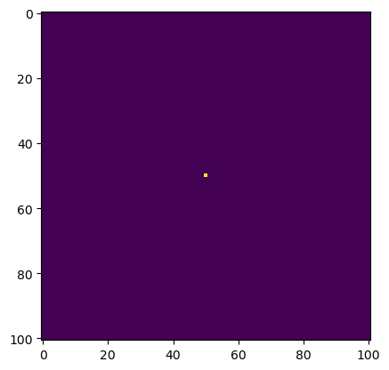
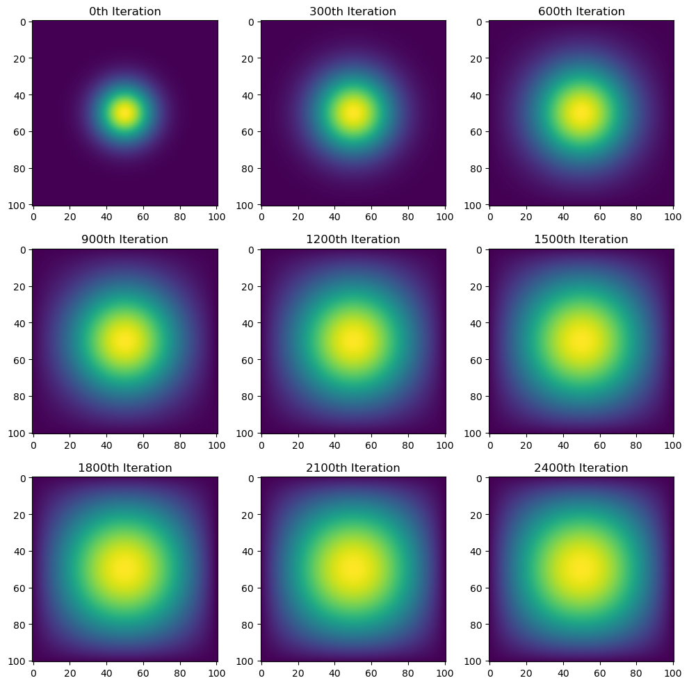
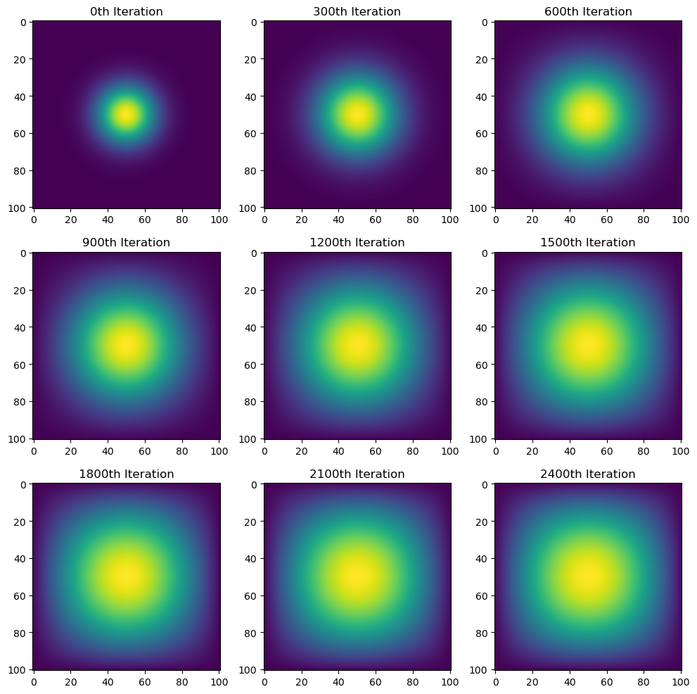

import numpy as np
from matplotlib import pyplot as plt
import jax
import jax.numpy as jnp
from jax.experimental.sparse import BCOO
import timeiterations = 2700
N = 101
epsilon = 0.2
u0 = np.zeros((N, N))
u0[int(N/2), int(N/2)] = 1.0
plt.imshow(u0)
def visualization(visuals):
fig, axes = plt.subplots(3,3, figsize = (10,10))
axes = axes.ravel()
for i in range(len(visuals)):
axes[i].imshow(visuals[i])
axes[i].set_title(f"{(i+1)*300}th Iteration")
plt.tight_layout()
plt.show()With Matrix Multiplication
def advance_time_matvecmul(A, u, epsilon):
"""Advances the simulation by one timestep, via matrix-vector multiplication
Args:
A: The 2d finite difference matrix, N^2 x N^2.
u: N x N grid state at timestep k.
epsilon: stability constant.
Returns:
N x N Grid state at timestep k+1.
"""
N = u.shape[0]
u = u + epsilon * (A @ u.flatten()).reshape((N, N))
return udef get_A(N):
"""
Creates matrix A, a 2D finite difference matrix
Args:
N: dimensions for the matrix
Returns:
A, a 2D finite difference matrix, N^2 x N^2.
"""
n = N * N
diagonals = [-4 * np.ones(n), np.ones(n-1), np.ones(n-1), np.ones(n-N), np.ones(n-N)]
diagonals[1][(N-1)::N] = 0
diagonals[2][(N-1)::N] = 0
A = np.diag(diagonals[0]) + np.diag(diagonals[1], 1) + np.diag(diagonals[2], -1) + np.diag(diagonals[3], N) + np.diag(diagonals[4], -N)
return Atime1 = time.time()
A = get_A(N)
u = u0.copy()
visuals_matrix = []
for i in range(1, iterations+1):
u = advance_time_matvecmul(A, u, epsilon)
if i%300 == 0:
visuals_matrix.append(u.copy())
time2 = time.time()
print(f"It took {time2-time1} seconds to perform that task.")It took 881.7408978939056 seconds to perform that task.visualization(visuals_matrix)
Sparse Matrix In JAX
def get_sparse_A(N):
"""
Creates sparse matrix A
Args:
N: dimensions for the matrix
Returns:
A JAX sparse BCOO representation of the N^2 x N^2 matrix
"""
n = N * N
diagonals = [-4 * jnp.ones(n), jnp.ones(n-1), jnp.ones(n-1), jnp.ones(n-N), jnp.ones(n-N)]
diagonals[1] = diagonals[1].at[(N-1)::N].set(0)
diagonals[2] = diagonals[2].at[(N-1)::N].set(0)
rows, cols, values = [], [], []
row_offsets = [0, 0, 1, 0, N]
col_offsets = [0, 1, 0, N, 0]
for i in range(len(diagonals)):
row_offset = row_offsets[i]
col_offset = col_offsets[i]
diagonal = diagonals[i]
indices = jnp.arange(len(diagonal))
mask = diagonal != 0
valid_indices = indices[mask]
values.extend(diagonal[valid_indices + row_offset].tolist())
rows.extend((valid_indices + row_offset).tolist())
cols.extend((valid_indices + col_offset).tolist())
rows = jnp.asarray(rows)
cols = jnp.asarray(cols)
values = jnp.asarray(values)
A_sp_matrix = BCOO((values, jnp.stack([rows, cols], axis=1)), shape=(n, n))
return A_sp_matrixtime1 = time.time()
jitted_advance_time_matvecmul = jax.jit(advance_time_matvecmul)
u = jnp.asarray(u0)
A = get_sparse_A(N)
visuals_sparse = []
for i in range(1,iterations+1):
u = jitted_advance_time_matvecmul(A, u, epsilon)
if i%300 == 0:
visuals_sparse.append(u.copy())
time2 = time.time()
print(f"It took {time2-time1} seconds to perform that task.")It took 52.79099154472351 seconds to perform that task.visualization(visuals_sparse)
Direct operation with numpy
def advance_time_numpy(u, epsilon):
"""Advances the simulation by one timestep, using NumPy
Args:
u: N x N grid state at timestep k.
epsilon: stability constant.
Returns:
N x N Grid state at timestep k+1.
"""
N = u.shape[0]
u_pad = np.pad(u, pad_width=1, mode = 'constant', constant_values=0)
rolled = (np.roll(u_pad, shift=-1, axis=0) + np.roll(u_pad, shift=1, axis=0) + np.roll(u_pad, shift=1, axis=1) + np.roll(u_pad, shift=-1, axis=1))
sum_rolled = (rolled - u_pad * 4)[1:-1,1:-1]
u_new = u + epsilon * sum_rolled
return u_newtime1 = time.time()
u = np.asarray(u0)
visuals_numpy = []
for i in range(1, iterations+1):
u = advance_time_numpy(u, epsilon)
if i%300 == 0:
visuals_numpy.append(u.copy())
time2 = time.time()
print(f"It took {time2-time1} seconds to perform that task.")It took 2.411999464035034 seconds to perform that task.visualization(visuals_numpy)With jax
def advance_time_jax(u, epsilon):
"""Advances the simulation by one timestep, using JAX NumPy
Args:
u: N x N grid state at timestep k.
epsilon: stability constant.
Returns:
N x N Grid state at timestep k+1.
"""
N = u.shape[0]
u_pad = jnp.pad(u, pad_width=1, mode = 'constant', constant_values=0)
rolled = (jnp.roll(u_pad, shift=-1, axis=0) + jnp.roll(u_pad, shift=1, axis=0) + jnp.roll(u_pad, shift=1, axis=1) + jnp.roll(u_pad, shift=-1, axis=1))
sum_rolled = (rolled - u_pad * 4)[1:-1,1:-1]
u_new = u + epsilon * sum_rolled
return u_newtime1 = time.time()
jitted_advance_time_jax = jax.jit(advance_time_jax)
u = jnp.asarray(u0)
visuals_jax = []
for i in range(1,iterations+1):
u = jitted_advance_time_jax(u, epsilon)
if i%300 == 0:
visuals_jax.append(u.copy())
time2 = time.time()
print(f"It took {time2-time1} seconds to perform that task.")It took 0.9609088897705078 seconds to perform that task.visualization(visuals_jax)
Comparisons
The first method revolves around matrix multiplication. It creates a matrix A by using numpy and a value N to specify the dimensions of the N^2 x N^2 matrix which should be created. The get_A(N) function works by creating an array of the five diagonal values within the matrix. The main diagonal always has the value of -4 because it is most affected by itself in terms of differences, while the neighbors surrounding have a value of 1. This is represented by the diagonals off the main one with n-1 lengths having values of 1 and the diagonals N diagonals off the main one with n-N lengths having values of 1. After the creation of A, the matrix is passed into the advance_time_matvecmul(A, u, epsilon) function which advances the matrix by one time step. Allowing it to go through 2700 iterations, and taking copies of the matrix u, which is the starting point and goes through changes throughout, at each 300th iteration, we can use a heatmap to visualize the change over time. This specific trial took almost 1000 seconds to run for N = 101, meaning that this is a very time-consuming and inefficient process.
In order to improve the time complexity, the second method involves the JAX library which is used for high-performance numerical computing as Python itself is very slow. We rewrite the A function to be get_sparse_A(N) which creates a matrix employing the features of JAX. Instead of storing every value within A, which is extremely inefficient given that majority of the values are 0, we can store the indices of the non-zero values within the matrix and build A accordingly using the JAX experimental sparse BCOO method. This allows us to reduce much of the inefficiency within the get_A(N) function. Additionally, we can now JIT (Just-in-Time) compile the advance_time_matvecmul(A, u, epsilon) function. This essentially means that we are using this JAX feature to optimize the Python functions within the function in the background and speed up the performance of the function. The final trial of 2700 iterations for this took around a minute or 60 seconds to run for N = 101. While the overall efficiency significantly improved, the time efficiency is still slow, so further changes were necessary.
The third method required using numpy to create the matrix and removing the presence of matrix A from the calculations. It essentially took the u matrix and used numpy to “roll” it. This essentially means that the matrix was shifted in all four directions to apply the affect of the main point on its neighbors. By summing each of these four matrices and subtracting 4 times the original to account for it, we find the effects of the single point on its neighbors. From there, we can account for the previous matrix and epsilon. This allows us to bypass the necessity for matrix A and reduce the time it takes for each iteration. The overall performance for this trial was much faster as it only took around 2 seconds to run 2700 iterations with N = 101. The following is a demonstration of how the shifting sum works without the padding that was added in case the original point was on the borders.
Original Shifted Sum Shifted Sum - 4*Original
0 0 0 0 1 0 0 1 0
0 1 0 1 0 1 1 -4 1
0 0 0 0 1 0 0 1 0
The fourth and final method simply adjusted the last method by transforming it to use numpy for the JAX library allowing us to JIT compile the function and speed up the overall performance of the 2700 iterations. This took around 1 second to complete, half of the time of the last method. I also found this one to be the easiest method to write as it didn’t require too many parts. Its creation was very easy by following the template of the third method, but it had better efficiency.